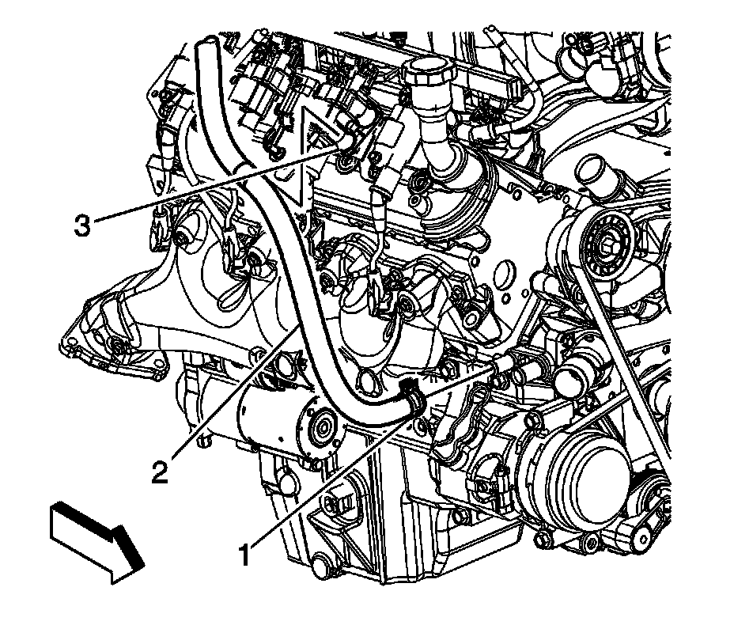
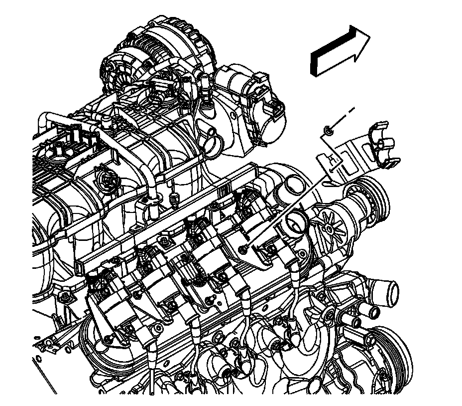

Valve Rocker Arm Cover Replacement - Right Side
Valve Rocker Arm Cover Replacement - Right Side
Removal Procedure

1. Remove the intake manifold cover. Refer to Upper Intake Manifold Sight Shield Replacement.
2. Remove the connector position assurance (CPA) retainer (2).
3. Disconnect the engine harness electrical connector (1) from the ignition coil wire harness.
4. Remove the engine wiring harness (electronic throttle control branch) clip (6) from the ignition coil bracket stud.
5. Reposition the engine wiring harness (electronic throttle control branch) as necessary.

6. Remove the generator battery cable clip (1) from the ignition coil bracket stud.
7. Reposition the generator battery cable as necessary.

8. Remove the heater inlet hose (2) from the heater hose bracket (3).

9. Remove the surge tank outlet hose (2) from the heater hose bracket (3).

10. Remove the heater hose bracket nut and bracket

11. Remove the spark plug wires (724) from the ignition coils.
^ Twist each plug wire 1/2 turn.
^ Pull only on the boot in order to remove the wire from the ignition coil.
12. Remove the ignition coil bracket studs (720).
13. Remove the ignition coil bracket (719).
14. Remove the positive crankcase ventilation (PCV) tube (1) from the valve rocker cover (2).
15. Loosen the valve rocker arm cover bolts.
16. Remove the valve rocker arm cover.
17. Remove and discard the old gasket (1).

18. Remove the oil fill cap (424) from the oil fill tube (423), if necessary.
19. Remove and discard the oil fill tube, if necessary.
Installation Procedure
Important:
^ All gasket surfaces should be free of oil or other foreign material during assembly.
^ DO NOT reuse the valve rocker arm cover gasket.
^ If the oil fill tube has been removed from the rocker arm cover, install a NEW fill tube during assembly.
1. Lubricate the O-ring seal (422) of the NEW oil fill tube with clean engine oil.
2. Insert the NEW oil fill tube (423) into the rocker arm cover.
Rotate the tube clockwise until locked in the proper position.
3. Install the oil fill cap (424) into the tube.
Rotate the cap clockwise until locked in the proper position.
4. Install a NEW rocker cover gasket (1) into the valve rocker arm cover lip.
5. Install the valve rocker arm cover.
Notice: Refer to Fastener Notice.
6. Tighten the rocker arm cover bolts.
Tighten the bolts to 12 N.m (106 lb in).
7. Install the PCV tube (1) to the valve rocker cover (2).
8. Apply threadlock GM P/N 12345382 (Canadian P/N 10953489), or equivalent to the threads of the ignition coil bracket studs.
9. Position the ignition coil bracket (719) onto the rocker cover.
10. Install the ignition coil bracket studs (720).
Tighten the studs to 12 N.m (106 lb in).
11. Install the spark plug wires (724) to the ignition coils.
12. Install the heater hose bracket and nut.
Tighten the nut to 9 N.m (80 lb in).
13. Install the surge tank outlet hose (2) to the heater hose bracket (3).
14. Install the heater inlet hose (2) to the heater hose bracket (3).
15. Position the generator battery cable as necessary.
16. Install the generator battery cable clip (1) to the ignition coil bracket stud.
17. Position the engine wiring harness (electronic throttle control branch) as necessary.
18. Install the engine wiring harness (electronic throttle control branch) clip (6) to the ignition coil bracket stud.
19. Connect the engine harness electrical connector (1) to the ignition coil wire harness.
20. Install the CPA retainer (2).
21. Install the intake manifold cover. Refer to Upper Intake Manifold Sight Shield Replacement.